8．超限基数与超限序数
康托尔在论证了相同的势与不同的势的集合都存在之后，他继续研究集合的势这个概念并且引进了基数与序数的理论，其中超限基数（transfinite cardinal number）与超限序数（transfinite ordinal number）是惊人的创造。康托尔在《数学年鉴》（Mathematische Annalen）杂志上从1879年到1884年发表的一系列文章中发展了这个工作，这些文章都纳入同一个标题：《关于无穷的线性点集》（Über unendliche lineare Punktmannichfaltigkeiten）。后来他在1895年与1897年写了两篇决定性的文章发表在同一杂志上(29)。
在关于线性集合的第五篇文章中(30)，康托尔从如下的观察开始：
我的集合论研究的描述已经达到了这样的地步，它的继续已经依赖于把实的正整数扩展到现在的范围之外。这个扩展所采取的方向，就我所知，至今还没有人注意过。
我对于数的概念的这一扩展依赖到这样的程度，没有它我简直不能自如地朝着集合论前进的方向迈进，哪怕是一小步。我希望在这样的情形下，把一些看起来是奇怪的思想引进到我的论证中是可以理解的，或者，如有必要的话，是可以谅解的。实际上，其目的在于扩展或推广实的整数序列到无穷大以外。虽然这可能显得是大胆的，我却不仅希望而且坚信，到了适当时机，这个扩展将被承认是十分简单、适宜而又自然的一步。但我仍是十分清楚，在采取这样一步后，我把自己放到了关于无穷大的流行观点以及关于数的性质的公认意见的对立面去了。
康托尔指出，他的关于无穷数或超限数的理论，不同于普通所说的一个变量变得无穷小或无穷大的那个无穷的概念。两个一一对应的集合具有相同的势或基数。对于有限集合来说，基数就是这集合中元素的个数。对于无穷的集合，要引进新的基数。自然数集合的基数用
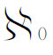
表示。由于实数不能和自然数构成一一对应，实数集合必定有另一个基数，这个基数用c表示，它是连续统continuum的第一个字母。正像势的概念一样，若在两个集合M与N中，N可与M的一个子集构成一一对应，而M却不能与N的任何一个子集构成一一对应，则M的基数就大于N的基数。从而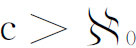
。要得到一个基数大于某一给定的基数(31)，可考虑任何一个具有这给定基数的集合M，并考虑M的所有子集所构成的集合N。在M的子集中有M的单个元素组成的集合，也有M的一对元素组成的集合等。现在，M与N的一个子集构成一一对应是一定可能的，因为N有一个子集是由M的所有单个元素构成的（每个单个元素看作M的子集当然是N的元素）。它自然可与M构成一一对应。但是，在M与N的全部元素之间不可能建立一个一一对应关系。因为假如这样的一个一一对应是可以建立的话，就可令m是M的任一元素，并考虑所有这样的m，它在所假定的一一对应关系下，与N的某个元素相对应，而N的这个元素作为M的子集时，并不包含m。把具有这样性质的m的全体所构成的集合记作η，则η当然是N的一个元素。康托尔证明，在所假定的一一对应下，η并没有M的元素与之对应。因为假如η与M的某一个m对应，且η含有m的话，那就会与η的定义本身有矛盾，假如η不含有m，则根据η的定义，m又应属于η。所以假定M与N存在一一对应关系是会导致矛盾的。由此可见，一已知集合的所有子集所构成的集合，其基数大于这已知集合的基数。
康托尔定义两个基数的和为两个分别具有所给基数的（不相交的）集合的和集的基数。他也定义了两个基数的乘积，给定两个基数α与β，集合M的基数为α，集合N的为β，作元素对（m，n），其中m属于M，n属于N，所有这样的元素对构成的集合，其基数定义为α与β的乘积。
基数的乘幂也得到了定义。设集合M的基数为α，集合N的基数为β，把集合N的每一元素用M的任一元素来置换，这就有许多不同的置换法，每一不同的置换法看作不同的元素，其总体所成的集合记作MN。康托尔定义MN的基数为αβ。在有穷的情况下，例如α＝3，β＝2，这相当于α个元素中每次取β个（允许重复）的排列所构成的集合，其基数为
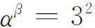
。令m1，m2，m3为集合M的三个元素，每次取2个的排列为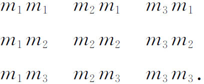
事实上，N的每一元素用M的任一元素来置换，就有α个不同的情形，既然N的每一元素就有α个不同的置换，则β个元素所有不同的置换法应当是αβ。有了乘幂的定义之后，康托尔证明了
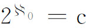
，这从（0，1）线段的数展为二进位小数可知，这时M只有0，1两个元素，N是自然数集合。康托尔提请人们注意这样的事实，即他的关于基数的理论特别适合于有限集合，从而对于有限数理论他已给出了“最自然、最简短且最严密的基础”。
下一个概念便是序数的概念。他在引进一个已知集合的逐次导集时，早就发觉序数概念的需要。他现在抽象地来引进这个概念。一个集合叫做全序的（simply ordered），假如它的任何两个元素都有一个确定的顺序；即若给定m1与m2，则或者是m1前于m2，或者是m2前于m1；记号表示m1＜m2或m2＜m1。再则，若m1＜m2与m2＜m3，则m1＜m3，即这顺序关系有传递性。一个全序集M的序数是这个集合的顺序的序型。两个全序集称为是相似的，假如它们是一一对应而且保留顺序，即若m1对应于n1，m2对应于n2，而m1＜m2，则必n1＜n2。两个相似的集合叫做有相同的序型或序数。作为全序集的例子，我们可用任一有限数集合并按任何给定的顺序排列。对于有限集，不管其顺序是怎样的，其序数是确定的，并且就用这个集合的基数来表示。正整数集合按它们的自然顺序，其序数用ω表示。另一方面，按递减顺序的正整数集合
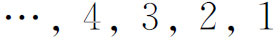
的序数用*ω表示。正、负整数与零所成的集合按通常的顺序，其序数为
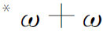
。接着康托尔定义序数的加与乘。两个序数的和是第一个全序集的序数加第二个全序集的序数，顺序即按其特殊规定。例如按自然顺序的正整数集合之后随着五个最初的正整数所构成的集合，即
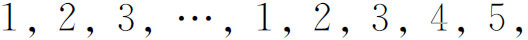
其序数为ω＋5。序数的相等与不相等，也可以很显然地给出定义。
现在他引进超限序数的整个集合，这在一方面是基于它本身的价值，另一方面是为了确切地定义较大的超限基数。为了引进这些新的序数，他把全序集限制在良序集（well-ordered）的范围之内(32)。一个全序集叫做良序集，假如它有为首的元素，并且它的每一子集也有为首的元素。序数与基数都存在着级别。第一级是所有的有限序数
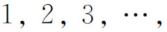
我们用Z1表示上述第一级序数。在第二级的序数是
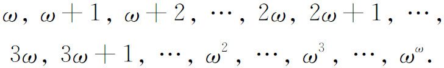
我们用Z2表示，其中每一个都是基数为
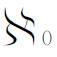
的集合的序数。Z2，作为上述序数构成的集合，应有一个基数。这个集合是不可列的，从而康托尔引进一个新的基数
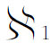
作为集合Z2的基数。接着证明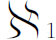
为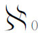
的后继的基数。第三级的序数用Z3表示，它们是
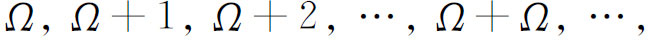
这些是良序集中基数为
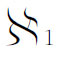
的集合的序数。而Z3这个序数的集合的基数大于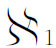
，康托尔用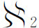
来表示它的基数。这个序数与基数的级别可以无穷无尽地这样继续下去。康托尔已经证明，对于给定的任一集合，总可以构造一个新的集合，即所给集合的所有子集构成的集合，使其基数大于所给集合的基数。如果给定集合的基数是
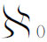
，则其全部子集构成的集合具有基数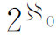
。康托尔已经证明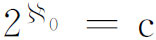
，这个c就是连续统的基数。另一方面，他通过序数引进了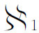
，并证明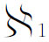
是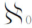
的后继者。于是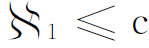
。至于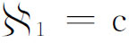
是否成立，即连续统假设（continuum hypothesis）是否成立，康托尔不管怎样刻苦努力，也不能回答。在1900年的国际数学会议上，希尔伯特把这个问题列入了著名问题的名单中（第43章第5节；也可参看第51章第8节）。对于一般的集合M与N，可能有这样的情形，即M不能与N的任何一个子集构成一一对应，而N也不能与M的任何一个子集一一对应。在这种情形下，虽然M与N各有基数，设分别为α与β，但不能说β＝α，还是α＜β或α＞β。也就是说，这两个基数是不可比较的。对于良序集，康托尔能够证明这样的情况不可能出现。存在着基数不能比较的非良序集这件事，看来似乎近于悖理，但怎样处理这个问题，康托尔同样不能解决。
策梅洛（Ernst Zermelo，1871—1953）着手处理了非良序集的基数的比较应怎样进行的问题。他在1904年(33)证明每一个集合都能够良序化（在某种重新排列下），并在1908年(34)给出了第二个证明。在证明中，他需要用到现在大家知道的选择公理（axiom of choice）（策梅洛公理）：对于给定的非空且不相交的集合的任何一个总体，总可以在每一集合中选取一个元素，从而构成一个新的集合。选择公理、良序化定理，以及任何两个集合可比较其基数的大小（即若它们的基数分别为α与β，则或者α＝β，或者α＜β，或者α＞β），这三者是等价的原理。